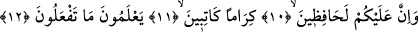

sonra dirilme olacağını ve amellerin karşılığının verileceğini daha baştan yalan
sayıyorsunuz. Gerçi âyet metninde amellerin karşılığı olarak cezâ ve mükâfattan söz
edilmiyor. Ancak âyette “din” kelimesi geçmekte ve bu kelimeyle cezâ ve mükâfat
kasdedilmektedir. Bu sebepledir ki Allah’ın cezâ ve mükâfat veren anlamındaki
“Deyyân” sıfatı “din” kelimesinden türemektedir.
Âyette geçen “din” kelimesi “cezâ ve mükâfat” anlamına gelebileceği gibi, “İslâm
dini” anlamına da gelir. Bu durumda âyetin mânâsı şöyle olur: “Hayır, hayır. Doğrusu
siz içerisinde öldükten sonra dirilmenin, yapılan amellere cezâ ve mükâfatın var olduğu
İslâm dinini yalanlıyorsunuz. Onu sual, cevap, sevap ve ikab olarak doğrulamıyorsunuz,
buna inanmıyorsunuz.”
10,11,12. Oysa yaptıklarınızı bilen, değerli yazıcılar sizi gözetlemektedirler.
“Oysa”
orada
olduklarından
ve
sizden
asla
ayrılmadıklarından
dolayı
“yaptıklarınızı” az ve çok fiillerinizi “bilen” ve onları karşılığını almanız için bir
nakir (hurma çekirdeği üzerindeki ince iz) ve kıtmir kadar bile olsa zabta geçiren,
yazan, bize mecburen itâat ettikleri veya emaneti yerine getirdikleri için nezdimizde
“değerli” olan “yazıcılar sizi gözetlemektedirler.” Âyet-i kerimede meleklerin çoğul
olarak “gözetleyiciler” şeklinde ifâde edilmesi ya âyete muhatap olan insanların
çokluğu itibariyledir ya da her bir insanı bir grup meleğin gözetlemiş olmasından
dolayıdır. Nitekim ifâde olunduğuna göre gözetleyen bu melekler gece iki, gündüz iki
adettir. Buna göre âyet-i kerimede denmiş oluyor ki: Sizler cezâ ve mükâfatı yalan
sayıyorsunuz ey mükellefler topluluğu! Oysa bizim katımızdan görevlendirilmiş olarak
sizin üzerinizde amellerinizi sayıp zabta geçiren melekler vardır.
Bu melekler yukarda işâret edildiği üzere emaneti tam olarak yerine getiren ve asla
hâin olmayan meleklerdir.
Fethu’r-Rahman’da ifâde olunduğuna göre Allah bu melekleri kötüleme sıfatıyla
değil de değerli olma sıfatıyla nitelemiştir.
Bazı âlimlerin görüşüne göre bu meleklerin kiram ve değerli olmaları, insanların
yaptıkları güzel fiilleri hemen hiç vakit geçirmeden yazmaya davranmalarından, kötü
amelleri ise -belki kul tevbe istiğfar eder umuduyla- yazmaktan geri durmalarından
dolayıdır. Dolayısıyla bu melekler yapılan kötü fiilin yanında bir de tevbe edilmişse -
günahı hemen yazmadıkları için- ikisini birlikte yazarlar.
Zehretu’r-Riyaz isimli eserde ifâde edildiğine göre âyette amelleri kaydeden
meleklere “kirâmen” denmesi, onların iyi bir hareketi yazdıklarında hemen semaya
yükselerek bunu Allah’a arzetmelerinden dolayıdır. Onlar yapılan işe şâhidlik ederek
Allah’a; “filanca kulun güzel bir amel işledi” derler. Buna karşılık kul kötü bir amel